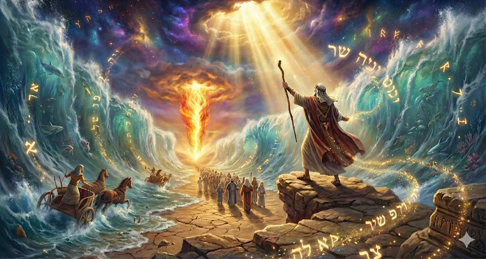
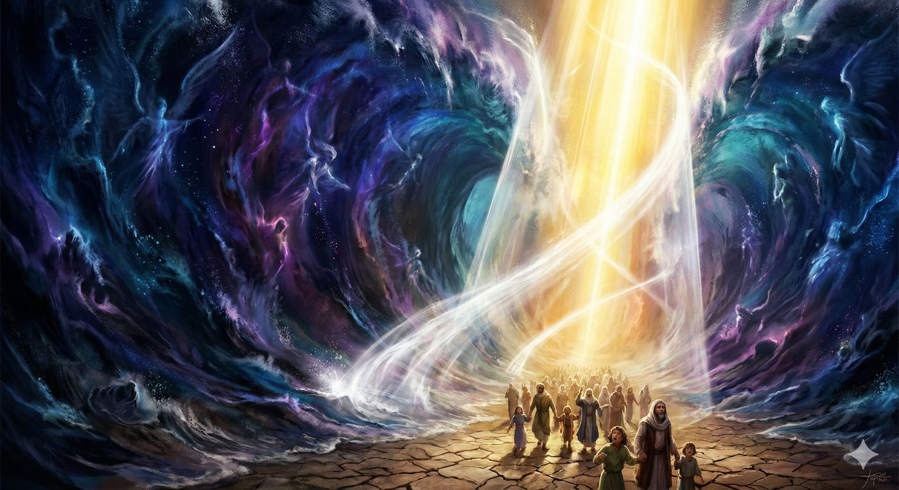
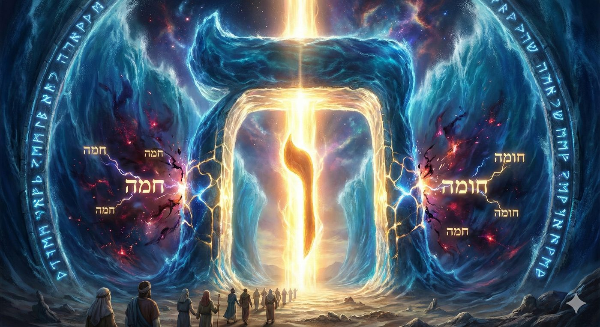
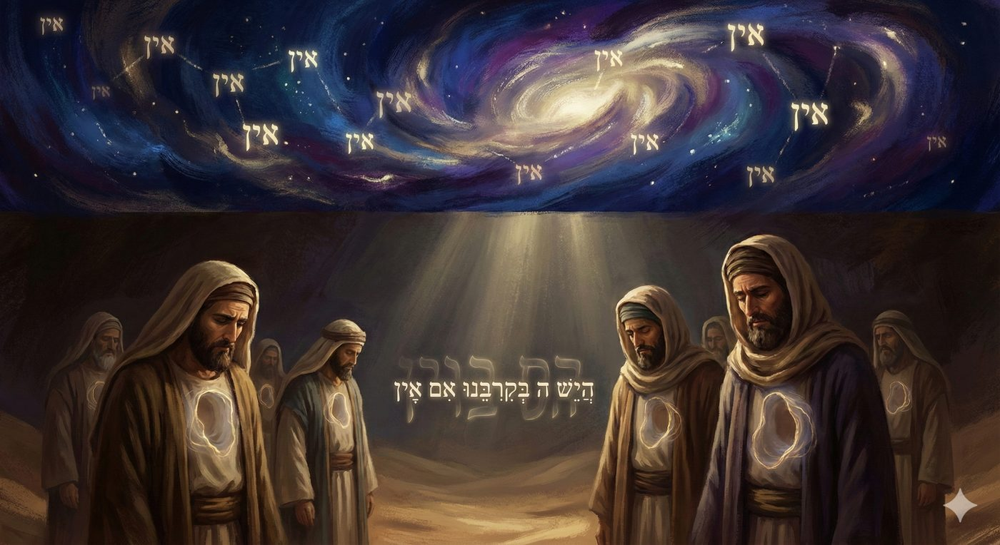
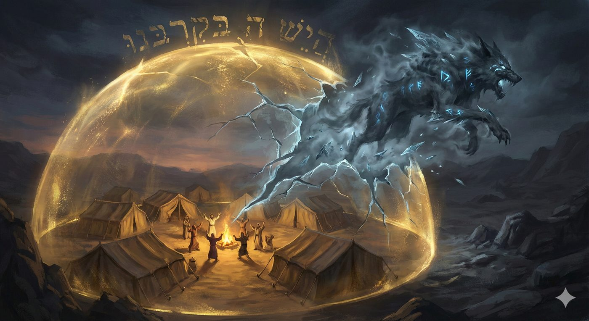
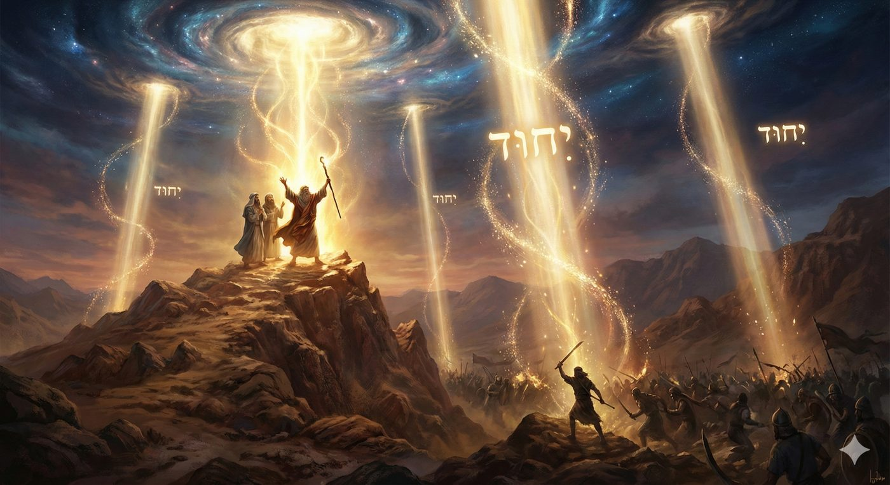
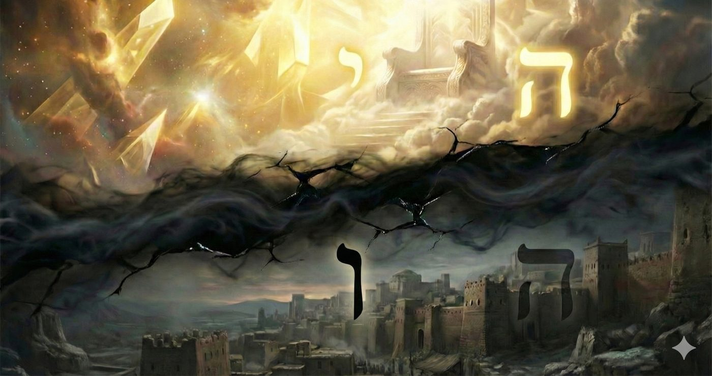

Bechala’h 5786
Combattre ses doutes
Cette étude s’inscrit dans le cadre d’un cycle d’enseignements fondé sur le livre de Chemot 5786. Il est conseillé au lecteur de le lire après avoir pris connaissance de la dialectique fondamentale entre l'immanence et la transcendance divine présentées dans Chemot 5786 (Lien de téléchargement), de l’analyse paracha Va’era 5786 sur le fait que les dix plaies étaient une démonstration de cette dialectique (Lien de téléchargement) et à l'introduction décisive de la participation humaine active par les Kelim (réceptacles) des Mitsvot dans Bo (Lien de téléchargement).
Les doutes de l’après-miracle
Si la Paracha Bo a marqué le début de l'action humaine, cet instant crucial où le peuple, par le sacrifice de l'agneau pascal et la circoncision, a construit les réceptacles nécessaires pour contenir la Lumière de la Délivrance, Bechala'h nous propulse dans une dimension encore plus vertigineuse et périlleuse : les doutes de l'après-miracle.

En effet, à la suite de la sortie précipitée d’Égypte, les Bnei Israël ne suivent pas la voie directe de la Terre promise, car D. ménage leur courage encore fragile face à l'éventualité de guerres territoriales. Guidé par une colonne de nuée le jour et de feu la nuit, le peuple se retrouve pris au piège entre les chars de Pharaon, décidé à récupérer ses esclaves, et la mer.
C’est alors que Moché, sur ordre divin, lève son bâton : les eaux se fendent, offrant un passage salvateur aux Hébreux avant de se refermer sur l’armée égyptienne. Ils perçoivent alors la Chlemout Guedolah (la Grande Perfection) de l'unité divine avec une clarté telle que, selon nos Sages, une servante a perçu sur la mer ce que le prophète Ézéchiel lui-même n'a pas vu dans ses visions célestes les plus sublimes.
Mais cette apothéose laisse bientôt place à l’épreuve aride du désert, où la faim et la soif ravivent les murmures et la nostalgie des chaînes égyptiennes. D. répond à cette détresse par le don de la Manne, nourriture céleste soumise à la discipline du Shabbat, et fait jaillir l’eau d’un rocher pour abreuver un peuple épuisé.
Pourtant, malgré ces prodiges renouvelés, une interrogation insidieuse s'installe dans les cœurs, démontrant le drame, la tension et la profondeur abyssale de notre Paracha :
« D.ieu est-Il au milieu de nous, ou non ? »
Le peuple d'Israël, encore imprégné des réflexes de l'esclavage, portant encore dans sa chair les stigmates de l'Égypte, laisse place au poison le plus subtil : le doute. Et c'est précisément là, dans cette fissure du Daat (de la Connaissance), que surgit l'ennemi le plus redoutable de l'histoire juive, l'archétype de l'anti-révélation : Amalek.
En doutant de l'Immanence divine “Est-ce que D. est יש yech existant parmi nous ou אין non ” après en avoir vu la transcendance le “אין” lorsque la mer est ouverte, Amalek survient et mord le peuple d’Israël, car le doute intérieur matérialise l'ennemi extérieur, soulignant que l'oubli de la Présence est le véritable catalyseur de la vulnérabilité face au mal.
L'objectif de ce chiour est d'analyser, avec l'aide du Ciel et de nos sages, la nature métaphysique et psychologique de ce doute et de la guerre qui a suivi. Nous verrons que le combat contre Amalek n'est pas un simple combat militaire mais une guerre totale pour la Conscience.
En nous appuyant sur les profondeurs du Zohar, sur la psychologie spirituelle du Sod Yecharim de Rabbi Tzadok HaKohen de Lublin, et sur les enseignements lumineux du Sfat Emet, nous démontrerons qu'Amalek représente la force d'entropie spirituelle, le "refroidissement" absolu qui tente de dissocier le Miracle de la Nature, brisant ainsi l'unité laborieusement construite par la sortie d’Égypte.
Nous comprendrons pourquoi cette guerre exige une stratégie inédite, jamais vue auparavant : non pas seulement des armes (l'action de Yehoshua dans la vallée), mais des mains levées vers le Ciel (la prière de Moché sur la montagne), symbolisant la reconnexion vitale entre le monde de l'action (Malkhout) et sa source divine (Keter). C'est le combat pour maintenir la chaleur de la Dvekout (l'adhésion à D.) dans un monde froid, cynique, hostile et rempli de doutes.
Douter d’Israël
La déchirure de la mer : un cadeau céleste
La lumière perçue lors de l'ouverture de la Mer (Kriat Yam Souf) était une lumière transcendante, un dévoilement d'En-Haut qui a suspendu les lois de la nature, une irruption de l'Infini dans le Fini. Mais cette lumière, aussi éblouissante et salvatrice soit-elle, était une "lumière d'emprunt", un cadeau céleste, et non encore une acquisition humaine.
Car si les Bnei Israël avaient suffisamment de mérite pour sortir d’Égypte (voir le chiour précédent sur Dam Milah et Dam Pessah), ce n’était pas le cas lors de l’ouverture de la Mer Rouge, qui a été réalisée par la seule volonté du Maître de l’Univers comme le révèle l'intervention des anges lors de cette traversée, qui met en scène un véritable procès céleste où le sort des Bnei Israël bascule. Le Midrash rapporte que l'ange protecteur de l'Égypte, identifié parfois comme l’ange de la mort, se tint devant le Trône de Gloire pour exiger justice. Son argument, d'une logique implacable, visait à paralyser l'attribut de Miséricorde.
Il s'écria devant le Maître de l'Univers : « Souverain du monde, pourquoi t'apprêtes-tu à accomplir un miracle pour les uns et à anéantir les autres ? En quoi les premiers sont-ils préférables aux seconds ? Ceux-là (les Égyptiens) adorent les idoles, et ceux-là (les Bnei Israël) adorent également les idoles ! »

Cette accusation souligne la profondeur de l'exil en Égypte. Le peuple n'était pas seulement esclave physiquement ; il s'était laissé imprégner par la culture et les cultes de ses oppresseurs jusqu'à la « quarante-neuvième porte de l'impureté ». Aux yeux de la stricte Justice, représentée par les armées célestes, il n'y avait aucune distinction morale immédiate qui justifiait une telle rupture des lois de la nature en faveur d'un camp plutôt que de l'autre.
La droiture de Yossef
Le Midrash poursuit en expliquant que c'est le souvenir de la droiture de Yossef qui fit pencher la balance. Devant l'insistance des anges, la mer ne s'ouvrit que lorsqu'elle « vit » le cercueil de Yossef transporté par Moché. Le texte sacré dit : « La mer vit et s'enfuit ». Elle vit celui qui, en Égypte, avait su briser sa propre nature et résister à la tentation de la femme de Potiphar. En réponse à cette maîtrise de soi, la nature elle-même accepta de briser ses propres limites (parmi les 4 forces de la création, l’eau symbolise notamment le laisser-aller charnel), ainsi que l’écrit David Hameleh dans ses Psaumes (Tehilim 114, verset 3) : « Hayam ra’a vayanos » “La mer vit et s'enfuit”, elle vit le cercueil de Yossef, et sa maîtrise absolue.
Nous pouvons approfondir cette analyse, en nous penchant sur le texte biblique, dans le livre de Chemot (14:22). Le texte dit : « les eaux étaient pour eux une muraille (Homa) ». Or, dans le rouleau de la Torah, le mot Homa (חומה) est écrit de manière « défective » (sans la lettre Vav), s'orthographiant ainsi : חמה (héma).
Le Midrash note que sans le Vav, le mot se lit Héma (la Colère) et les Sages enseignent à ce propos : « Ne lis pas Homa (muraille), mais Héma (colère). Cela vient nous apprendre qu'à cet instant précis, les eaux de la mer étaient remplies de fureur contre les Bnei Israël, à cause de l'idole de Mikha que certains transportaient avec eux depuis l'Égypte. » (et qui sera utilisée pour donner vie au veau d’or quelques semaines plus tard …)
Le Vav (ו), dans la symbolique des lettres hébraïques, représente le lien, l'axe vertical qui relie le Ciel et la Terre. C'est la lettre de l'extension et de la protection continue. Lorsque le Vav est présent, la lettre H'et (ח) est adoucie par cette présence divine, formant une Muraille (Homa) qui sépare le danger du peuple. Lorsque le Vav se retire, il ne reste que la Colère (Héma).

C’est pourquoi, cette manifestation spirituelle transcendante grandiose, du niveau le plus haut, que nous pouvons nommer dans la tradition mystique (le niveau d’Atik, l’ancien), ne pouvait être intériorisée dans les réceptacles du cœur et de l'esprit du peuple au niveau du quotidien, et que nécessairement elle risquait de défaillir à la première occasion.
Croire conduit à Douter
Bechala'h nous confronte dès lors à la réalité de la difficile unification entre la transcendance et l’immanence. Il est facile de croire en D.ieu quand le Nil se change en sang, que les grenouilles ou les bêtes sauvages rendent invivables la vie des Égyptiens, d’avantage encore lorsque la Mer s'ouvre et annihile l’Égypte. C'est ce que l'on appelle la "Foi par la Vue" (Reiyah), mais que devient cette foi lorsque l'eau manque ou que le ventre crie famine, que devient la conscience de l'Unité quand D. semble répondre absent ?
La Traversée de la Mer : Le Sommet de la Révélation
La traversée de la Mer a été le sommet de la Révélation. Le Zohar nous dit que même les fœtus dans le ventre de leur mère ont chanté la Shira, le chant prophétique associé à cette libération. C'était une vision de clarté absolue : ils ont pointé du doigt et dit « C'est mon D.ieu » (Zeh E-li). Ils ont vu que le monde de la nature et le monde du miracle ne faisaient qu'un.
Et pourtant à peine trois jours après la traversée, ils murmurent des plaintes à Mara, puis à Sin et enfin à Rephidim. Comme nous l’avons vu, la vision de la Mer était un cadeau d'En-Haut (Itarouta de-Léila) qui n'était pas le fruit d’un travail, et tout ce qui est donné gratuitement finit par être retiré pour que l'homme puisse le reconquérir par l'effort. D.ieu s'est retiré, voilant Sa face, pour voir si Israël pouvait Le trouver non plus dans l'ouverture grandiose de la mer, mais dans la sécheresse d'un rocher.
L’épreuve du Daat et le test de son intégration
C'est ainsi que la connaissance, le Daat est mis à l'épreuve. Car Le Daat, ce n'est pas l'information intellectuelle, c'est la fusion, la connexion intime, le "trait d'union" qui relie la compréhension abstraite à l'émotion vécue. Adam a "connu" (vayéda) Hava au travers d’une union charnelle et spirituelle. Israël doit "connaître" D.ieu, c'est-à-dire L'unir à sa réalité quotidienne. Mais, le désert est le lieu laissé à la déchéance, où cette union semble impossible, où la nature semble hostile, vide de D.ieu.
Toute élévation spirituelle violente est immanquablement suivie d'une possibilité de chute, ou pour le dire avec plus de précision, d'un test d'intégration afin de vérifier si le réceptacle, le Keli est suffisamment solide pour recevoir ces lumières.
Manifestement les Bnei Israël (ou du moins une partie du peuple) qui avaient insuffisamment intégré le Daat et en étaient restés à un niveau de Emouna (insuffisant par nature, car croire aveuglément en D. consiste finalement à croire en une version de D. telle que l’esprit l’imagine et donc se fabriquer un D.ieu imaginaire), ont fini par exprimer leurs doutes au travers d’une phrase dramatique que nous allons analyser, ainsi que ses conséquences : « L'Éternel est-il au milieu de nous, ou non ? » HaYesh Havaya Bekirbenu Im Ayin הֲיֵשׁ ה בְּקִרְבֵּנוּ אִם אָיִן

Une Question de Modalité et non d'Existence
Comment une telle question est-elle possible ? Ce peuple vient de voir les dix plaies dévaster la plus grande puissance mondiale, a marché au milieu de la mer à sec, entre des murailles d'eau translucides. Ce peuple est guidé, jour et nuit, par une manifestation surnaturelle visible : une colonne de nuée et une colonne de feu. La manne, ce "pain du ciel", tombe chaque matin devant leur tente. On pourrait être tenté d’imaginer que la faim et la soif de ce peuple errant dans le désert les a rendus athées en quelques jours, amnésiques de D., mélancoliques de Pharaon.
Mais nos maîtres et en particulier le Sfat Emet et le Mei HaShiloach (Rabbi Mordechai Yossef Leiner d'Izbica) nous invitent à une lecture beaucoup plus subtile, qui nous éloigne de la condamnation simpliste de leurs doutes pour nous rapprocher de la psychologie profonde de la foi.
La question n'est pas ontologique, D.ieu existe-t-il ? Après la déchirure de la Mer, une telle interrogation est impossible, même pour le plus sceptique des hommes, la réalité de D.ieu est une évidence aveuglante.
La question est modale : Quelle est le mode de présence divine ? :
« L'Éternel (le Tétragramme, le D.ieu du Miracle) est-il véritablement existant - Yech Bekerbenou- au milieu de nous ? » Ou est-il seulement transcendant, au niveau du néant du Ayin en dehors de ce monde.
Yesh et Ayin : Les Catégories de la Perception
Pour comprendre la profondeur de l'interrogation d'Israël à Refidim, il est impératif de définir les termes Yesh et Ayin tels qu'ils sont conceptualisés dans la théologie mystique juive. Ces concepts ne sont pas de simples antonymes (être et néant), mais des catégories dynamiques de la perception divine et de la création que l’on doit comprendre.
Le Ayin : Le Néant Créateur et la Transcendance
Dans la mystique juive, le Ayin (Néant) ne désigne pas l'absence d'existence, mais une existence si absolue, si pure et si illimitée qu'elle échappe à toute définition ou saisie intellectuelle. C'est le Divin en tant que Source, souvent associé à l’émanation de L'Ein Sof (l'Infini) avant toute contraction de lumière. Le Zohar enseigne que la création est un processus de Yesh Mi-Ayin (l'Existence à partir du Néant). Le Ayin représente ainsi La Transcendance Absolue, D.ieu tel qu'Il est en Lui-même, au-delà des mondes (la lumière qui entoure les mondes Sovev Kol Almin), le Miracle, l'intrusion de l'infini dans le fini, brisant les lois de la nature et l'Insaisissable, ce que l'esprit humain ne peut comprendre.
Le Yesh : L'Immanence et la Matière
Le Yesh désigne l'existence manifestée, le monde du "Il y a". C'est la réalité tangible, le cosmos, la nature (Téva), et la conscience de soi de la créature (l'Ego, le Ani - inversion des lettres de Ayin). Dans la perspective de la Création, le Yesh est le résultat du Tzimtzum (la contraction divine). D.ieu a voilé Sa lumière infinie pour permettre l'émergence d'une réalité qui se sent séparée et autonome. C'est le domaine du Nom Divin Elokim (valeur numérique 86, identique à Ha-Téva, La Nature). Ce nom représente la Rigueur et la capacité divine à se dissimuler dans des lois immuables. Le Yesh représente l'Immanence, la lumière divine qui s'investit dans les mondes (Memale Kol Almin) pour les vivifier de l'intérieur, la Limite, les lois naturelles, le temps, l'espace.
Du point de vue de la créature, le monde est le Yesh (le concret) et D. est perçu comme Ayin (l'invisible abstrait), cependant, du point de vue de la Vérité Divine seul D.ieu est le véritable Yesh (l'Être Véritable, Yesh Amiti), et le monde créé, qui n'a pas d'existence autonome, est comme un néant (Ayin) devant Lui.
Le Paradoxe de la Perception : le Drame de Rephidim
Revenons au verset d'Exode 17:7. Le peuple est assoiffé. Ils sont à Refidim (littéralement "relâchement", interprété par les Sages comme un relâchement dans l'étude ou la conscience de la Torah, Rafu yedeihem min haTorah), ils querellent Moché et posent la question fatale.
Le texte hébreu est d'une précision chirurgicale : « HaYesh Havaya Bekirbenu... ». Ils n'utilisent pas le nom Elokim (le D. de la nature), mais le Tétragramme Havaya (le D. de la Transcendance et de l'Histoire).
Selon le Meor Einayim (Rabbi Menahem Nahoum de Tchernobyl) et d'autres maîtres hassidiques, la question est qualitative :
HaYesh Havaya Bekirbenu : Est-ce que le niveau de Havaya (l'essence transcendante, le miracle pur, la lumière infinie) peut véritablement résider Bekirbenu (dans nos entrailles, dans notre intériorité finie et matérielle) ?
Im Ayin : Ou bien ce niveau est-il voué à rester Ayin, c'est-à-dire transcendant, séparé, un Néant mystique accessible seulement par l'extinction de soi, mais impossible à intégrer dans la vie quotidienne du corps ?
Le peuple d'Israël, après avoir vécu des miracles grandioses (la Manne, la Mer), ressentait une dissonance cognitive insupportable. Ils voyaient des miracles (Ayin se manifestant), mais dès que le miracle cessait, ils retombaient dans la dure réalité du désert (Yesh) et ne parvenaient pas à retenir l’illumination. Leur angoisse était celle de l’intégration : « Pouvons-nous internaliser (Bekirbenu) l’Infini dans le fini, ou sommes-nous condamnés à une relation sporadique avec un D. qui apparaît et disparaît ?". Ils demandaient si le Daat (la Connaissance-Union) était possible, ou si le fossé entre le Créateur et la créature était infranchissable.
Le drame théologique de l'homme réside dans cette double perception, le but de la vie juive, et spécifiquement de la sortie d'Égypte, est d'unifier ces deux perspectives : révéler le Yesh divin dans le Yesh du monde, transformant la matière opaque en un "réceptacle" (Keli) transparent à la Divinité. C'est le secret de l'unification des Noms Havaya (Transcendance) et Elokim (Nature).
La génération du désert (de Moché) se trouvait à l'intersection violente de ces deux mondes. Ils avaient quitté l'Égypte, le royaume du Yesh absolu (déification de la nature), et étaient entrés dans le désert, le royaume du Ayin (dépendance totale au miracle). Leur question, " HaYesh Hashem Bekirbenu Im Ayin ", n'était pas un doute sur l'existence de l'Architecte, mais une angoisse sur la possibilité de l'union : l'Infini (Ayin) peut-il résider durablement dans le Fini (Bekirbenu) ?
Mais en faisant cela ils ont créé, dans leur conscience, une dichotomie fatale entre le domaine du Sacré (le futur temple, le Miracle, le Ciel, la Mer qui s'ouvre) et le domaine du Profane (le Désert, la Soif, la Nature, le Corps, la maison). Or, nous avons vu dans les études précédentes que le but ultime de la sortie d'Égypte était justement d'unifier ces deux domaines, de prouver que « la terre est à l'Éternel » (Exode 9:29) et non seulement les Cieux.
En demandant « Est-Il au milieu de nous ? » ou en reformulant « L'Infini peut-il résider durablement dans le Fini (Bekirbenou) ? » les Bnei Israël, séparent le domaine du Miracle de celui de la Nature, et réintroduisent la dualité que la Délivrance devait abolir, et cette faille ouvre la porte à Amalek.
Amalek la morsure du doute
Immédiatement après ce verset, le texte déclare : « Amalek vint et combattit Israël à Refidim » (Exode 17:8). La juxtaposition est causale : parce qu'ils ont douté, le doute incarné (Amalek) est survenu. "Est-Il au milieu de nous ? Voici le chien <Amalek> qui vient vous mordre" (Midrash).

Amalek l’incarnation du Safek, du doute
La Gematria (valeur numérique) d'Amalek est 240, identique à celle du mot Safek (Doute). Mais de quel doute s'agit-il ? Ce n'est pas le doute sceptique moderne sur l'existence d'un Créateur. Amalek est le petit-fils d’Essav, il sait par tradition que D. existe mais il combat son peuple (et donc Sa Volonté) sciemment.
En réalité, Amalek remet en doute l’existence d’une Providence divine qui s’établit sur chaque détail de la création (la Hashgacha Pratite) considérant de fait que le Hasard (Mikreh) existe et que D.ieu ne gère pas tout ce qui s’opère. Le verset décrit l'attaque d'Amalek par les mots « Asher korh’a ba-dereh’ » (qui t'a rencontré sur le chemin). Le terme Korh’a est lié à Kar (froid) et à Mikreh (hasard). Amalek prétend ainsi en réalité que tout est accidentel : ma sortie d'Égypte ne serait qu’un hasard politique et météorologique, l’ouverture de la Mer, un phénomène de marée… Il considère que D. existe mais nie l’intentionnalité divine dans l’histoire.
Le discours est tentant, car comme nous l’avons déjà expliqué, la complexité des plaies est qu’elle repose sur une embase matérielle et physique, afin de permettre à l’homme d’avoir le mérite de croire, de douter, etc… permettant à Amalek de s'attaquer spécifiquement au concept de Daat (la Connaissance/Conscience Intime de D.ieu).
Or, la fracture du Daat est dangereuse, elle peut générer un théologien érudit (une connaissance purement intellectuelle de D.ieu), dont les actions sont néanmoins celles d'un athée (une déconnexion émotionnelle et pratique de la présence divine). Cet état représente une forme subtile d'Exil de la Connaissance (Galout HaDaat), distincte de l'absence de Daat caractérisant les esclaves de Pharaon.
Amalek exprime ainsi le doute jeté sur l'Unité (Yihud) de D.ieu. Toute force cosmique ou toute voix psychique interne qui introduit une dichotomie entre l'ordre naturel et la transcendance divine, en postulant que « D.ieu n'est pas au milieu de nous » et que le hasard est la force régulatrice, empêche la perception holistique de la souveraineté divine. Le Nom de D.ieu, qui incarne l'union du Temps (Passé, Présent, Futur) et l'unification de tous les plans existentiels, est alors perçu par l'humanité comme fragmenté comme nous le verrons en conclusion.
Amalek tente donc de retransformer le Ayin (le divin perçu par Israël) en un simple Yesh (phénomène naturel dénué de sens), de désacraliser l'histoire.
Le timing d’Amalek
Rabbi Tzadok pose une question qui devrait nous troubler : Pourquoi Amalek attaque-t-il spécifiquement après les grands miracles ? Pourquoi n'a-t-il pas attaqué en Égypte quand les Juifs étaient faibles, esclaves, sans défense ? Pourquoi attendre qu'ils soient au sommet de leur puissance, après avoir vaincu Pharaon, après la déchirure de la Mer, après avoir reçu la Manne ?
Le Midrash Tanhuma compare Amalek à un homme qui saute dans un bain bouillant. Il se brûle, mais il refroidit le bain pour les autres. Israël était "bouillant" de la conscience divine après la déchirure de la Mer. Les nations tremblaient et Amalek a osé attaquer. Même s'il a perdu militairement, il a gagné psychologiquement en "refroidissant" la ferveur (Hitlahavout) d'Israël. Il a introduit l'idée que le peuple de D. est vulnérable.
La réponse de Rabbi Tzadok bouleverse notre compréhension du combat spirituel. Amalek n'attaque pas la faiblesse physique ; il attaque la Sainteté (Kedoucha), spécifiquement quand Israël atteint un sommet spirituel.
Rabbi Tzadok explique que Amalek représente une force spirituelle impure (une Klipah) qui prétend que la Sainteté est inaccessible à l'homme matériel.
Amalek ne nie pas forcément que D.ieu est Saint, qu'Il est Très-Haut. Ce qu'il nie, c'est que l'homme, fait de chair, de sang, de pulsions et de matière, puisse être saint. Il nie la possibilité de la Brit (l'Alliance) dans la chair. C'est pourquoi Amalek attaque après la déchirure de la Mer, au moment où Israël touche le Ciel. Et c'est pourquoi, selon le Midrash rapporté par Rachi, il cherchait spécifiquement à frapper ceux qui avaient relâché leur engagement dans la Brit Mila (la circoncision), et ceux que la Nuée avait rejetés (les "trainards").
Le Midrash raconte que Amalek coupait les membres circoncis et les jetait vers le Ciel en disant : "Prends ce qui est à Toi, et laisse-nous ce qui est à nous". Ce geste d'une violence symbolique inouïe permet de comprendre que Amalek dit à D.ieu : "Garde la sainteté, garde la circoncision, garde la religion dans les sphères célestes. Mais laisse-nous le corps. Laisse-nous l’intimité, le matériel, la politique. Ne viens pas sanctifier la chair".
Le message d'Amalek est ainsi une terrible séduction théologique : "D.ieu est trop haut, trop pur, trop transcendant pour se soucier de vos petits corps, de votre nourriture, de votre intimité. Laissez la religion dans les Cieux (transcendance) et vivez votre vie terrestre (immanence) sans culpabilité ni contrainte." C'est une tentative de couper le lien vertical, l'échelle de Yaakov.
Or, si Israël accepte cette idée, si Israël pense que la sainteté est réservée aux anges ou aux moments de prière extatiques (à la Synagogue) mais qu'elle ne concerne pas le commerce, le couple ou la nourriture, alors Amalek gagne, car le projet divin est, comme nous l'avons vu, de faire résider la Shechina ici-bas (Dirah Betartonim) et d’utiliser l’homme comme associé du Créateur.
Amalek veut ainsi prouver que le "Divin intérieur" (le Memale) est une illusion pour nous enfermer dans une réalité purement matérielle, coupée de sa source. C'est l'exil de la Présence Divine par excellence, pouvant faire d'Israël une nation comme les autres, soumise à la nature et au destin, et non une nation de prêtres qui sanctifie la matière.
La réponse du Daat aux doutes
Face à cette attaque, qui vise le cœur même de l'identité d'Israël, la réponse doit être totale. Elle ne peut pas être uniquement militaire (ce serait tomber dans le piège d'Amalek qui veut nous réduire à de la matière), ni uniquement spirituelle (ce serait fuir le monde). Elle doit être l'union absolue des deux. C'est le sens de la répartition des rôles entre Moché et Yehoshua : l'union de la prière contemplative (Moché sur la montagne) et de l'action guerrière (Yehoshua dans la vallée) qui détruit Amalek. C'est la réponse parfaite à la philosophie de séparation d'Amalek : nous combattons physiquement (prouvant que nous sommes pleinement dans le monde), mais nous regardons vers le haut (prouvant que nous ne sommes pas du monde, que notre force vient d'ailleurs).

Moché : Les Mains du Daat dans le Keter
Moché Rabbénou, le maître des prophètes, ne descend pas dans la vallée. Il dit à Yehoshua : « Choisis-nous des hommes et sors combattre Amalek ; demain je me tiendrai au sommet de la colline, le bâton de D.ieu à la main » (Exode 17:9).
La Michna dans le traité Roch Hachana (29a) pose la célèbre question rhétorique : « Les mains de Moché faisaient-elles la guerre ou arrêtaient-elles la guerre ? » Elle répond immédiatement : « Non, mais tant qu'Israël regardait vers le haut et assujettissait son cœur à son Père qui est aux Cieux, ils étaient victorieux ; sinon, ils tombaient. »
Il ne faut pas s'y tromper : ce n'est pas de la magie, les mains de Moché ne sont pas des antennes émettrices de rayons mystiques qui frappent les Amalécites mais elles sont des vecteurs de focalisation de la conscience collective, des antennes du Daat.
D’ailleurs notre maitre le Arizal nous enseigne que le développement du mot Yad יד, écrit pleinement יוד דלת (youd dalet), et rajouté à lui-même a pour valeur numérique Daat דעת, l’ouverture des mains, qui ne se fait qu’au travers des mitsvots, est la clé pour obtenir du Daat et reconnecter l’unité divine.
Dans la mystique juive (notamment le Zohar sur Bechala'h), Moché représente l’union entre le Daat (Connaissance unificatrice) et Tiferet (Harmonie/Vérité), en levant les mains vers le ciel, il opère une unification cosmique, un Yihoud. Il reconnecte le monde d'en bas (Malkhout, le champ de bataille, la réalité physique où se bat Yehoshua) avec le monde d'en haut (Keter, la Volonté Suprême, la source de la Miséricorde et de la victoire, l'Origine).
Amalek, nous l'avons dit, veut couper ce lien pour isoler le Malhout (la Royauté/Le Monde) de sa source. Moché, par un effort intense (le texte dit que ses mains deviennent "lourdes", pesantes de la résistance à la matière), maintient le canal ouvert de force. Il provoque l’écoulement de la Transcendance dans l'Immanence de la bataille et témoigne, par sa posture physique, que la victoire ne dépend pas de l'épée, mais de la Source de l'épée en étant le canal vivant qui empêche le monde de se "refroidir".
Yehoshua : Le Keli dans la Malh’out, Aaron et Hour : La solidarité
Mais Moché, aussi grand soit-il, ne peut pas gagner seul. Il a besoin de Yehoshua dans la vallée. Yehoshua (son fidèle serviteur) représente ici l'action concrète, la lutte dans la matière, l'aspect de Malh’out. Il est celui qui tient l'épée, qui organise les troupes, qui fait couler le sang. Si Moché était resté seul sur la montagne sans armée en bas, il n'y aurait pas eu de victoire, car il n'y aurait pas eu de réceptacle (Keli) pour recevoir la victoire divine. D.ieu veut passer par la nature pour vaincre celui qui nie le Maître de la nature et il faut que la nature elle-même (l'épée de Yehoshua) devienne sainte.
Aaron et Hour soutenaient ses mains, « l'un deçà, l'autre delà » (Exode 17:12). Même le plus grand prophète, même l'homme de D.ieu, ne peut maintenir la connexion seul indéfiniment. La gravité du monde matériel est trop forte. Il a besoin du soutien de la communauté. Aaron (qui représente la bonté/Hessed et la paix) et Hour (le fils de Miriam, qui représente le dévouement total/Guevoura jusqu'à sa mort lors de l’épisode du veau d’or) viennent équilibrer et soutenir le Daat de Moché. Cela nous enseigne une leçon éthique fondamentale : la lutte contre le doute, le refroidissement et le cynisme d'Amalek ne peut se gagner dans l'isolement. La communauté, la Hevra, est essentielle pour "tenir les mains" de celui qui faiblit dans sa foi, pour rappeler la verticalité quand l'horizon semble bouché. Encore une fois, nous constatons que les kelims doivent être disposés en axes, pour organiser leurs soutiens, leurs ardout, voir chiour Vayehi 5786.
La Rupture du Lien (Daat) et l'Attaque contre le Trône
La victoire de Yehoshua et Moché fut néanmoins limitée « il affaiblit Amalek au tranchant de l’épée ». L'anéantissement définitif d'Amalek est une promesse eschatologique, liée à l'avènement messianique, non réalisable à date comme il est écrit à la fin de la paracha : « Parce que la main <celle d’Amalek> est sur le trône de Yah <Kes Y-ah>, tu feras la guerre à Amalek de génération en génération » (Exode 17:16).
Rachi note que le Nom de D. (Havaya) est tronqué (il manque le Vav et le Hé, pour donner Y-ah) et que le mot Trône (Kissé) est tronqué (Kes).
Afin de comprendre cette disjonction il faut savoir que le Nom Complet (Youd-Hé-Vav-Hé) représente l'union de l'intellect (Youd-Hé : Hohma et Bina) et des attributs/actions (Vav-Hé, les 6 attributs et la malhout). Amalek sépare le Nom de D. en deux, il laisse le Yod-Hé (l'intellect, le ciel, la transcendance auquel il n’a pas accès) mais le sépare du Vav-Hé (la descente vers le bas, l'immanence, la parole). Il accepte un D. créateur, un D. "du ciel", mais refuse un D. intime qui se soucie de l'eau, du pain et de la politique (Havaya dans le Yesh).

Ainsi tant que l'entité spirituelle ou physique d'Amalek subsiste dans le monde, l'intégrité du Nom divin et de Son Trône demeure incomplète.
Amalek guette ces moments de "redescente" spirituelle (à la sortie de la synagogue, après une fête, une bonne action) pour instiller le cynisme : « L'expérience spirituelle était belle, mais il est impératif de revenir à la froide réalité, aux contraintes matérielles, à la matière inerte. »
On comprend dès lors que le combat contre Amalek ne s’est pas achevé dans la vallée de Rephidim, il se rejoue chaque matin à l'instant où nous quittons la sphère du sacré pour entrer dans celle du profane. Si l'étude de cette Paracha est cruciale, c'est parce qu'elle nous offre les armes pour briser le cynisme de notre époque.
Ceci implique que le maintien du Daat, cette conscience vibrante et viscérale de la présence divine dans le quotidien, constitue l'enjeu central de l'existence, et que le passage à la pratique consiste à transformer sa Emouna (la foi abstraite) en Daat (la conscience vécue). Concrètement, cela signifie injecter de l'intentionnalité dans le "Yesh", dans la matière la plus brute, sanctifier son repas, son travail ou ses relations sociales, c'est refuser de laisser ces domaines à la dérive du hasard. C'est affirmer, contre Amalek, que Dieu est "au milieu de nous", jusque dans les détails de notre économie et de notre biologie.
C’est appliquer l'attitude de Moché/Yehoshoua : le refus de la dichotomie, pour percevoir la Providence Divine (la Hashgahah Pratit) dans les épreuves de la Vie, les réussites professionnelles et les relations interpersonnelles, et maintenir la ferveur du lien, la Dvekout, même lorsque la révélation miraculeuse se retire.
C'est par l'actualisation de cette unité, par le rejet du refroidissement émotionnel du cynisme, et par la sanctification de l'existence matérielle, que l'humanité œuvre à la restauration progressive du Trône divin et précipite la Geoula finale, l'époque messianique prophétisée par Zacharie où …
« וְהָיָה ה' לְמֶלֶךְ עַל כָּל הָאָרֶץ בַּיּוֹם הַהוּא יִהְיֶה ה' אֶחָד וּשְׁמוֹ אֶחָד »
« Et l'Éternel sera roi sur toute la terre ; en ce jour, l'Éternel sera Un et Son Nom sera Un. »
(Zekharia, 14,9)
Yehi Ratson, Que soit la volonté du Ciel,
que nous combattions nos doutes pour accepter pleinement l’unité des conduites divines malgré les épreuves de la vie
que nous puissions par ce mérite précipiter la Geoula finale
Chabat Chalom !
 Pour aller plus loin - Douter de bien faire
Pour aller plus loin - Douter de bien faire
La théorie de Gershon Henoch Leiner de Radzyn, petit-fils du Mei hashiloah telle qu'elle est présentée dans le Sod Yesharim, repose sur une inversion audacieuse des paradigmes religieux classiques. Là où la plupart des systèmes théologiques cherchent à atteindre la certitude, l'école d'Izbica-Radzin place l'incertitude au centre de la vie spirituelle.
Le doute comme révélation divine
Pour Gershon Henoch, le doute n'est pas un obstacle à la foi ou une faiblesse humaine, mais une manifestation de la volonté divine. Il soutient que Dieu se retire ou se cache précisément pour créer un espace de doute. Cet état d'incertitude est ce qui permet à l'homme d'exercer son libre choix et de chercher une connexion plus profonde et authentique avec le Créateur, au-delà des simples habitudes religieuses.
La critique de la certitude
Il développe une méfiance radicale envers la certitude religieuse absolue. Selon sa théorie, celui qui est "trop sûr" de sa piété ou de sa compréhension de la Loi risque de tomber dans l'orgueil ou dans une pratique mécanique. Le doute devient donc un outil de purification : il maintient l'individu dans un état d'humilité et de vigilance constante.
La "Clarification" (Birour)
Un concept clé chez les Leiner est celui du Birour (clarification). Gershon Henoch enseigne que la vérité est souvent mélangée au mensonge ou à l'obscurité. La tâche de l'homme n'est pas d'éviter le doute, mais de plonger dedans pour "clarifier" les étincelles de sainteté qui s'y trouvent. Cela implique parfois que des actions qui semblent douteuses ou transgressives au regard de la loi extérieure peuvent être intérieurement alignées sur la volonté divine si l'intention est pure (un concept déjà esquissé par son grand-père dans le Mei ha-Shiloah).
La synthèse entre Halakhah et Kabbalah
Gershon Henoch ne se contente pas d'une approche mystique abstraite. Il applique sa théorie du doute à la Halakhah (la loi juive). Son œuvre monumentale, le Sod Yešarim, montre comment les complexités juridiques et les avis divergents des sages reflètent en réalité les différentes facettes de la lumière divine. Pour lui, la structure même de la discussion talmudique, avec ses questions sans réponse et ses doutes, est une forme de révélation.
Une réponse à la modernité
Sur le plan historique, sa théorie peut être vue comme une tentative d'intégrer l'expérience de l'homme moderne. Gershon Henoch proposait une spiritualité capable d'absorber le scepticisme et d'en faire un moteur de croissance plutôt qu'un motif d'abandon.
En résumé, la théorie de Gershon Henoch propose que la véritable foi ne consiste pas en l'absence de doute, mais dans la capacité à servir Dieu à travers et avec la crainte qui découle du doute, transformant l'incertitude en un espace de rencontre sacré avec le Daat.
 Synthèse
Synthèse
Synthèse du Chiour : Bechalah 5786 – Combattre ses doutes
Ce chiour explore le drame spirituel qui suit la Délivrance d’Égypte : l’épreuve des doutes de l'après-miracle. Après l'apothéose de la traversée de la Mer, où le peuple a perçu l'unité divine avec une clarté absolue, les difficultés du désert (la faim, la soif) font resurgir une interrogation insidieuse : “L'Éternel est-il au milieu de nous, ou non ?” Cette question n’est pas un doute sur l’existence de D.ieu (improbable après les miracles), mais une angoisse modale portant sur Sa présence.
Leur Doute est conceptuel, le niveau de Havaya (le D. de la Transcendance, le Miracle pur, l’Ayin - le Néant créateur insaisissable) peut-il résider durablement Bekirbenu, dans notre intériorité finie et matérielle, le Yesh ? Le peuple n’arrive pas à intérioriser la lumière transcendante reçue passivement comme un cadeau du Ciel pour en faire une acquisition humaine active. Cette incapacité crée une dichotomie fatale entre le Sacré (le Miracle, le Ciel) et le Profane (le Corps, la Nature, le Désert). Le Daat (Connaissance/Conscience Intime), qui doit être le pont d’union entre l’intellect abstrait et l’action vécue, est brisé.
Amalek, l'Incarnation du Doute (Safek)
Cette faille dans le Daat ouvre immédiatement la porte à Amalek, dont la Gematria (240) est identique à celle de Safek (Doute). Amalek est l’archétype de l’anti-révélation et de l'entropie spirituelle. Il attaque le concept d’Hashgacha Pratite (la Providence divine sur chaque détail), en prétendant que tout est Kar (froid) et Mikreh (Hasard/accidentel). Il tente de désacraliser l'histoire et de rompre l'Unité (Yihud). Amalek attaque spécifiquement après les miracles, ciblant la Sainteté (Kedoucha) de l'homme matériel. Il nie la possibilité de l’Alliance (Brit) dans la chair, affirmant que le Divin est trop haut pour se soucier du corps, de la nourriture ou de l'intimité. Son objectif est de faire d’Israël une nation comme les autres séparée de sa Source.
Conclusion : La Guerre Totale pour la Conscience
Face à cette attaque métaphysique, la réponse ne peut être ni uniquement militaire ni uniquement spirituelle. Elle exige l’union absolue des deux, symbolisée par Moché (sur la montagne), les mains levées vers le Keter (la Source divine, la Transcendance) et Yehoshua (dans la vallée), l'action militaire (le monde de Malkhout, l'action concrète, l'immanence).
La victoire réside dans le maintien de la Dvekout (l'adhésion à D.) dans la froideur du monde, et la démonstration que le projet divin est de faire résider la Shechina (Présence Divine) ici-bas. Le but est toujours le même : unifier les Noms Havaya (Transcendance) et Elokim (l'immanence), transformant la matière opaque en un Keli (réceptacle) transparent à la Divinité, en un trône pour installer la royauté divine…
Thème central : Le Combat pour la Conscience Le Paradoxe de l'Après-Miracle : La Chute du Sommet
La Fissure du Daat : « Est-Il au milieu de nous ? »
Amalek ou l’Entropie du Doute
La Stratégie de la Réunification (Moché et Yehoshua)
Synthèse Mystique : La Restauration du Trône
|
📚 Sources Tanakh (Torah, Prophètes, Hagiographes)
Targoum et Midrash
Talmud Bavli
Zohar HaKadosh :
Hassidout
|
 Plan du Chiour
Plan du Chiour